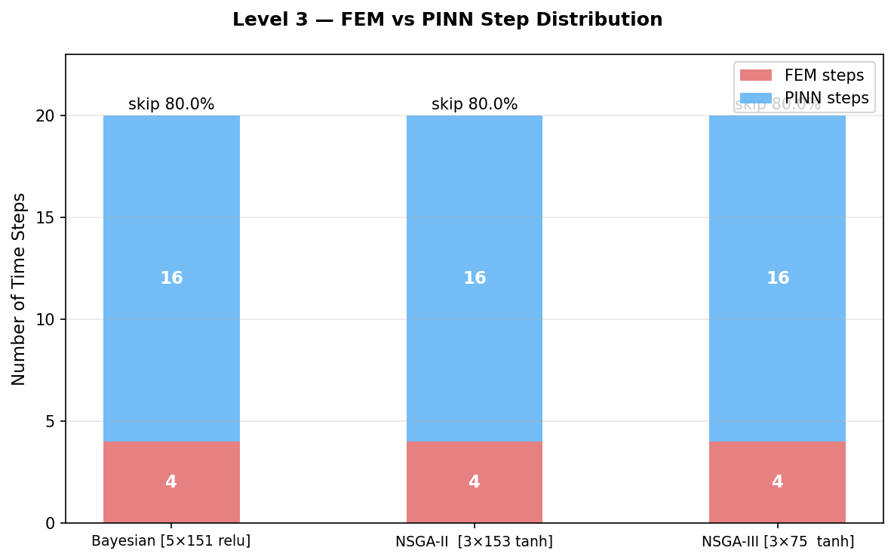

Result Plots

This bar chart compares FEM and PINN step counts for both configurations at threshold=0.1. Config A (max skip=4) uses 4 FEM calls and 17 PINN steps, while Config B (max skip=20) achieves 2 FEM and 19 PINN steps. The key insight is that both configurations automatically concentrate the few FEM calls in the high-residual region (early quench phase) while using PINN for the slower, more predictable later cooling. This adaptive behaviour would be difficult to achieve with fixed-skip approaches without prior knowledge of the solution dynamics.

The residual trace plot shows the actual PDE residual value at each time step during the Level 3 simulation. Steps where the bar exceeds the dashed threshold line (0.1) are coloured to indicate a FEM trigger. The residual peaks sharply in the first two or three steps then decays rapidly as the casting temperature gradient moderates. This exponential decay pattern mirrors the analytical cooling curve T(t)=20+520·exp(−1.75×10³t) and confirms that the routing decision correctly prioritises FEM effort in the physically hardest region of the time domain.
This visualisation shows all 21 time steps coloured by solver choice for Config A. The pattern clearly shows FEM clustering at the early steps and PINN dominating the middle and late simulation time. The clustering is not periodic (unlike Level 2's fixed-skip pattern) but is physics-driven: FEM is called exactly when the residual tells the router that the PINN is struggling, then released again as the solution smooths out.
Config B's step distribution shows even fewer FEM calls — just 2 in the entire 21-step run. With max-skip raised to 20, the router can allow up to 20 consecutive PINN steps before forcing a FEM anchor. Since the residual quickly drops below 0.1 after the initial transient, the router exploits this and runs the PINN almost exclusively after the first couple of steps. The accuracy trade-off of this extreme reduction should be evaluated against the specific application's tolerance for PINN extrapolation error.